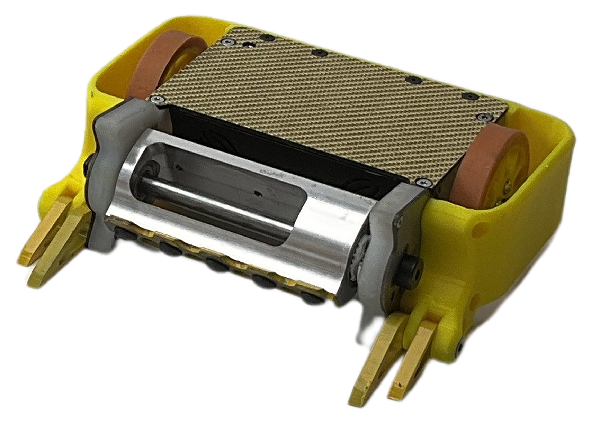
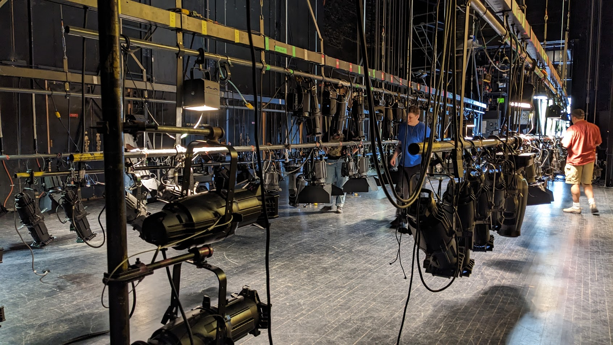

Long Version
I graduated in May 2025 from Rose-Hulman Institute of Technology with a degree in software engineering, mathematics, and computer science. I like pretty much all aspects of software engineering, from eliciting software requirements from clients, to designing software based on functional and nonfunctional requirements, to quality assurance, to debugging, to writing documentation.
I am always trying to learn and improve and enjoy looking for ways to apply what I have learned in courses and outside of courses to new problems or other things I do.
Additionally, I am a cyclist, an outdoor adventurer, a musician, and a stage technician, and in high school and college, I was always busy with extracurriculars, teaching me skills that I have both unintentionally and intentionally applied to software engineering. A few of those applications are described below.
Applying Skills to Software Engineering
- Challenging Myself
- Learning Quickly
- Constantly Exploring
- Working Efficiently and Finding Balance
- Continuously Improving
- Anticipating What is Next
Challenging Myself

I started riding the Courage Classic bike ride (current route is 145 miles over two days) with my family when I was eight, and each year I try to create a more difficult variation of the route to complete.
Whenever I finish a difficult hike or bike ride, I immediately start looking for one that is a little harder to attempt next, and if I find a route that sounds difficult, I am often intrigued by it and start planning ways to complete it. That has taught me to challenge myself and persevere.
At Rose-Hulman, my favorite software engineering projects were often complex and did not have an obvious solution (like ROCKO, Linter, Bone App(etit), and Debugging Open Source Software). I usually had to try many ideas to complete parts of the project, and I enjoyed the process of working towards a solution. I also learned to carefully read through documentation to understand the systems I am working with and solutions to similar problems, and I can easily focus on debugging difficult problems.
Learning Quickly
In college, I was involved in extracurriculars that I did not have a lot of experience in, such as Formula SAE and stage crew for the drama club and performing arts auditorium.
On the Formula SAE team my freshman year, I completed many small mechanical engineering projects that required learning CAD, and the team manager recommended that I be a sub-team lead for the next year.
I was the suspension sub-team lead for the next two years, where I spent a lot of the summer and school year learning mechanical engineering concepts, like in statics and finite element analysis.

I started doing stage work my senior year, and my only previous experience had been setting up chairs and stands for a summer music festival. At the beginning of the school year, I did not know that the standard outlets in the United States were called Edison outlets. But by the end of the school year, I had set up for touring performing arts ensembles and helped mic the drama club's pit orchestra.
Those skills have been valuable in software engineering by letting me understand large code bases quickly and learn new languages and frameworks, like during my internship at DEKA, where I learned Go and then developed a Go library and started a Go service. It was especially useful in my group's capstone project when learning controls and understanding how to incorporate ROS2.
Constantly Exploring

Living in Colorado, I can easily go hiking and backpacking, letting me explore mountains and areas away from roads. I often look at maps and peaks I can see from the area I am visiting, giving me ideas for where I might want to explore next. Usually, more difficult and remote places are more appealing to me. That led to me being curious and always trying to learn new things. At Rose-Hulman, I often overloaded on courses and sat in on courses for fun.
In software engineering, I typically research many possible solutions, letting me find one that is optimal and also exposing me to concepts that I may be able to use in the future. Also, finding a solution that works is not as important to me as understanding why that solution works. Then, I know the limitations of that solution and can apply parts of that solution to other problems. Furthermore, if I come across a new software engineering topic in my free time, I usually try to learn a little about it. Recently, I researched good languages to read data from and write data to files for a dog walk scheduling project and then wrote some Perl scripts.
Working Efficiently and Finding Balance
I have always been involved in many extracurriculars and taken as many courses as possible, often overloading. That has taught me to work efficiently to have enough time to focus on extracurriculars while also learning and completing assignments on time.
Constantly being busy before and after school helped me use my time between classes efficiently. I learned to get homework done between classes or whenever I had a break during the day.
It is important for me to balance software engineering with spending time outside and doing stage work. I enjoy the problem solving and learning aspects of software engineering, and being in the mountains or moving heavy objects around the stage complements software engineering well.
Efficiency and balance taught me prioritization, which is useful in software development to decide which tasks or features need to be completed first. It also taught me when it would be a better use of resources to stop improving something, otherwise I would always be trying to improve it.

Continuously Improving
I am constantly looking for ways to improve. More recently, outside of software engineering, I have been trying to set faster times biking up climbs around Boulder and be a better bass section leader for Flatirons Community Orchestra. For biking, I have researched effective ways to train and recover and learned some bicycle maintenance.
My main goal for improving as a section leader is getting better at communicating, whether that is in emails or in-person during rehearsals. I have analyzed emails sent by the cello section and principal bass at Jefferson Symphony Orchestra to learn how they give their emails a more exciting tone and clearly explain plans for sectionals, changes to bowings, or arrangements for meetings.
Improving can be applied to all aspects of software engineering. Some areas I have applied improvement the most are looking for ways to refactor and optimize code (DEKA internship, Linter, Expanding and Documenting Catan), thinking of ways to improve processes (Dog Walk Scheduler), and communicating with coworkers (ROCKO).
One of the more important skills I have used to improve is reflection. Reflecting on both what worked and what did not work gives me specific things to keep doing and specific things to change. Then, I can focus on those small improvements the next time and more easily measure if I improved.
Anticipating What is Next

On robotics teams and when doing stage work, learning quickly and observing team members and coworkers has helped me anticipate what I could do next or where I may be needed to help others. It can also help me identify potential problems. For example, when setting up for a show, I know a general order of tasks that need to happen based on technical documentation of what the show needs. Then, if we are standing by for a task, I can get started on next steps, like clearing a path or gathering tools that will be needed.
During my internship at DEKA, I was able to look ahead while waiting for builds to complete or for a coworker to answer a question. When developing the metrics library, I knew that I would eventually need to write release documentation, so I looked through documentation for other Go libraries. Then, when I had enough information for the release documentation, I could immediately start writing it.